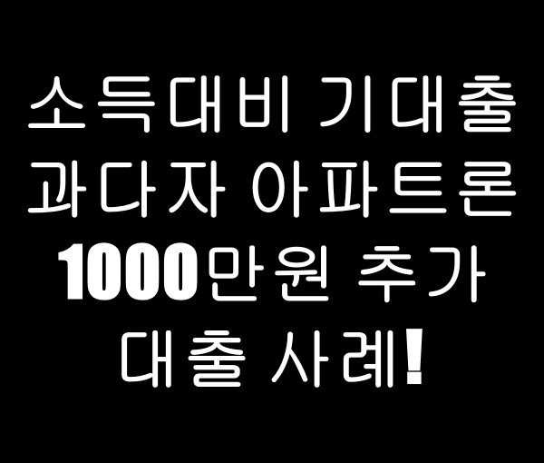
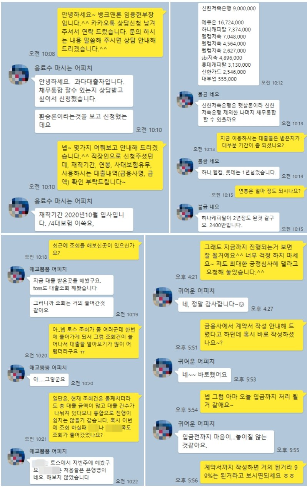

소득대비 기대출 과다자 아파트론 1000만원 추가 대출 사례!

안녕하세요~ 뱅크앤론 임용현부장입니다. ^^
오늘은 소득대비 채무가 과다하신 고객님의 추가대출 사례를 안내해 드리겠습니다.
문의 주신 고객님은 재직 5개월정도 되신 사대보험 가입된 직장인 이셨으며, 연봉은 2400만원 정도 되셨습니다.
기존에 이용중이신 대출은 신한저햇900 에큐온 16,724,000 하나캐피탈 7,374,000 웰컴저축 7,048,000 웰컴저축 4,564,000 웰컴저축 2,627,000 sbi저축 4,896,000 롯데캐피탈 3,130,000 신한카드 2,546,000 대부업 555,000 으로 5000만원이 넘는 채무 금액을 보유 하고 계셨고, 최근 토스조회로 인해 한번에 여러군데 조회건이 많이 되어 있으신 상황이었습니다.
채무통합으로 문의를 주셨으나, 소득대비 채무 금액이 과다하고, 대출건수가 많아 채무를 전부 통합하기는 어려웠고, 다행이 배우자와 공동명의로 된 아파트를 보유 하고 계셔서 아파트론으로 안내해 드려 1000만원 추가 대출을 받으실 수 있었습니다.
조회건이 많고 채무 건수가 많아 일반 아파트론 상품도 진행이 어려웠으나, 현재 조건에서 가장 승인율 좋을만한 금융사로 안내해 드려서 1000만원 무설정 아파트론으로 추가자금필요하신거 해결하고 일부 채무 상환하실 수 있게 되었습니다.
아래는 해당 고객님과 실제 상담한 카톡 상담내역이오니 참고 하시어 많은 도움 되셨으면 좋겠습니다. 감사합니다. ^^
